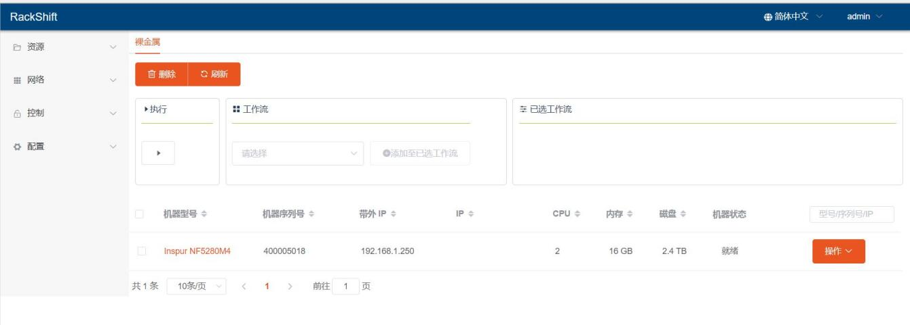
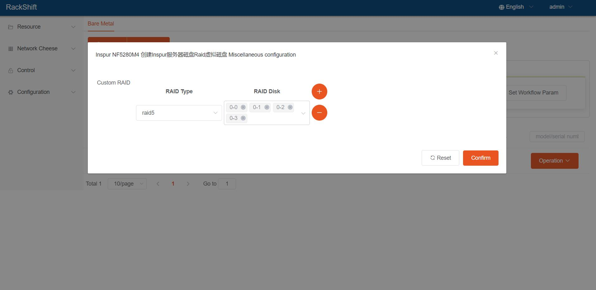
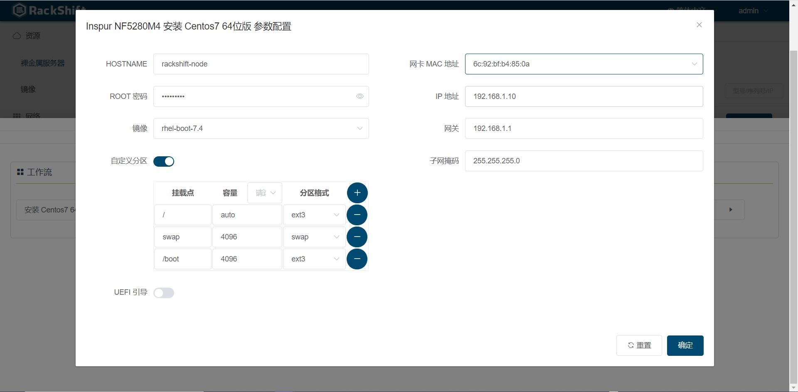

欢迎来到 RackShift ！
RackShift 是一款开源的裸金属服务器全生命周期平台，功能覆盖裸金属（物理机）的上架、RAID 配置、固件升级、操作系统安装、中间件部署等。
初心和使命
对于实现企业大批量多品牌多机型裸金属供应自动化的愿景
项目的起源
在对比国内外开源的 RackHD，MAAS，RackN，CloudBoot 等一系列开源软件之后，我们可以感受
到每种工具的优势与不足，MAAS使用门槛太高，许多配置不明所以，RackN 使用上也存在门槛太高，
配置繁琐的问题。RackHD 使用方便，文档齐全，但是同样存在操作门槛的问题。因此，我们决定基于
工程质量最高和功能完整度最全的 RackHD 进行一定的“魔改”以使得其适配更多的机型（官网支持机型
只有DELL EMC, Cisco， White Box 等几个有限的型号 ），于是 RackShift 诞生了！
经过验证支持 RAID，装机的物理机机型
| 品牌 | 型号 |
| DELL EMC | Power Edge R630 R640 R720 R730 R740 R910 R920 R930系列 |
| HPE | Proliant 380 580 Gen8 Gen 9 Gen 10 系列 |
| Inspur | 5280 8480 M4 M5 系列 |
| IBM | X3550 X3650 M4 系列 |
| H3C | R4900 G3 系列 |
| ZTE | R5300 G4 系列 |
随着项目的开源，后续还会支持越来越多的机型
界面展示
- 物理机 
- 做 RAID 
- 装机 
技术栈
- 前端: Vue.js
- 后端: Spring Boot
- 数据库: MySQL
致谢
- RackHD：感谢 RackHD 提供的底层实现；
- MAAS：感谢 MAAS 提供的生命周期纳管思路；
- Digital Rebar：感谢 Digital Rebar 提供的操作方式和 UI 参考；
- Element：感谢 Element 提供的优秀组件库。